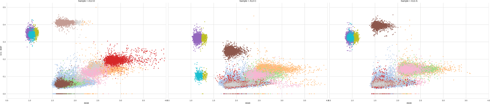
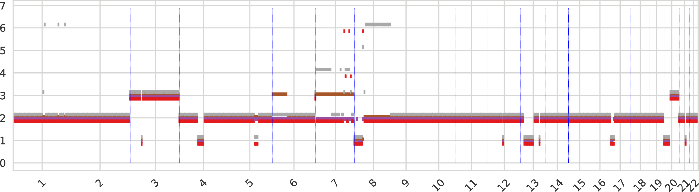
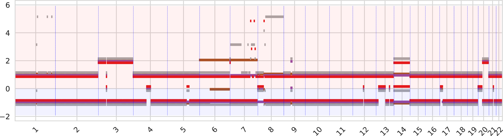
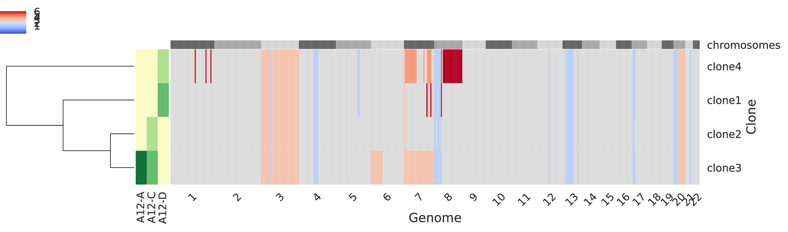

Demo for WGS data from a cancer patient¶
: ex: set ft=markdown ;:<<’```shell’ #
NOTE: this demo has not yet been updated for version 1.0 of HATCHet which includes variable-width binning, phasing, and locality-aware clustering.
The following HATCHet’s demo represents a guided example starting from WGS (whole-genome sequencing) data from 3 samples (A12-A, A12-C, and A12-D) of metastatic patient A12, previously published in (Gundem et al., Nature, 2015)). For simplicity, the demo starts from a BB file demo-wgs-cancer.bb (included in this demo at examples/demo-WGS-cancer/) which contains the RDR and BAF of every genomic bin and, therefore, we assume that the preliminary steps (i.e. count-reads, count-alleles, and combine-counts) have already been executed by running standard configuration for WGS data (bin size of 50kb through -b 50kb of count-reads, and the allele counts for germline heterozygous SNPs have been selected between 3 and 200 through -c 3 -C 200).
Requirements and set up¶
The demo requires that HATCHet has been successfully compiled and all the dependencies are available and functional. As such, the demo requires the user to properly set up the following paths:
PY="python3" # This id the full path to the version of PYTHON3 which contains the required `hatchet` module. When this corresponds to the standard version, the user can keep the given value of `python3`
:<<'```shell' # Ignore this line
The following paths are consequently obtained to point to the required components of HATCHet
CLUSTERBINS="${PY} -m hatchet cluster-bins"
PLOTBINS="${PY} -m hatchet plot-bins"
INFER="${PY} -m hatchet compute-cn"
PLOTCN="${PY} -m hatchet plot-cn"
:<<'```shell' # Ignore this line
We also ask the demo to terminate in case of errors and to print a trace of the execution by the following commands
set -e
set -o xtrace
PS4='[\t]'
:<<'```shell' # Ignore this line
Global clustering¶
The first main step of the demo performs the global clustering of HATCHet where genomic bins which have the same copy-number state in every tumor clone are clustered correspondingly. To do this, we use cluster-bins, i.e. the HATCHet’s component designed for this purpose. At first, we attempt to run the clustering using the default values of the parameters as follows:
${CLUSTERBINS} demo-wgs-cancer.bb -o demo-wgs-cancer.seg -O demo-wgs-cancer.bbc -e 12 -tB 0.03 -tR 0.15 -d 0.08
:<<'```shell' # Ignore this line
For different type of data it is essential to assess the quality of the clustering because this is performed by a Dirichlet process and it is affected by varying degrees of noise. To do this, we use plot-bins, i.e. the HATCHet’s component designed for the analysis of the data, and produce the cluster plot using the CBB command. To help we use the following options:
--xmin 0.5and--xmax 4allow to zoom in and to focus the figure on the same RDR (x-axis) range for every sample.--colwrap 3allows to have the 3 plots of the 3 samples on the same figure row-tS 0.005asks to plot only the clusters which cover at least the0.5%of the genome. This is useful to clean the figure and focus on the main components. To trace all steps, we also move the figure totR015-cbb.pdf.
${PLOTBINS} -c CBB demo-wgs-cancer.bbc --ymin 0.5 --ymax 4 --colwrap 3 -tS 0.005
mv bb_clustered.png tR015-cbb.png
:<<'```shell' # Ignore this line
We thus obtain the following clustering:

We can easily notice that the clustering is not ideal and is clearly overfitting the data by choosing too many distinct clusters; in fact we notice the presence of many different clusters that are extremely close and have identical BAF in every sample, e.g. light blue/dark blue/light orange/dark grey clusters or orange/purple clusters or pink/light gray clusters are always adjacent clusters which appear to be part of wider cluster. A good condition to assess the quality of the clustering is to assess that every pair of clusters is clearly distinct in one of the two dimensions (RDR and BAF) in at least one sample.
Since Dirichlet clustering is not ad-hoc for this application, it can often result in overclustering. For this reason, cluster-bins additionally provides a procedure to merge clusters which are very likely to be part of a single cluster. However this procedure requires two maximum thresholds for doing this, one is the maximum shift for RDR (-tR 0.15) and one is the maximum shift for BAF (-tB 0.03). The default values allow to work with most of the datasets, however datasets of high variance require to tune these parameters. In our example, while the BAF of the clusters appears to be consistent with the default threshold, RDR appears to have much higher variance; in fact, the clusters that are always adjacent span much more than 0.15 of RDR in the x-axis. Therefore, by looking at the plot, we can see that a value of -tR 0.5 fit much better the noise of RDR in our data and we repeat the clustering with this value.
${CLUSTERBINS} demo-wgs-cancer.bb -o demo-wgs-cancer.seg -O demo-wgs-cancer.bbc -e 12 -tB 0.03 -tR 0.5 -d 0.08
:<<'```shell' # Ignore this line
We assess again the clustering using plot-bins as before.
${PLOTBINS} -c CBB demo-wgs-cancer.bbc --ymin 0.5 --ymax 4 --colwrap 3 -tS 0.008
mv bb_clustered.png cbb.png
:<<'```shell' # Ignore this line
We thus obtain the following clustering:

In this clustering the previously-described condition is met and all the different clusters are clearly distinct in at least one sample.
hatchet’s step¶
In the last step we apply hatchet, i.e. the component of HATCHet which estimates fractional copy numbers, infers allele-and-clone specific copy numbers, and jointly predicts the number of clones (including the normal clone) and the presence of a WGD.
We apply the last step with default parameters and, for simplicity of this demo, we apply only few changes:
As the dataset has high variance and noise (see clustering), we consider a minimum clone proportion
-uslightly higher than the default value, i.e.10%. We do this because we cannot infer tumor clones with very low proportions when there is high noise and because potential clones inferred with very low proportions may simply be the result of overfitting. In fact, when using values of-usmaller than10%we obtain solutions with clone proporions identical to the minimum value of-u; this is the recommended criterion to determine the need of increasing the value of-u.We limit the number of clones to 6 for simplicity of this demo and because it is a reasonable value for CNAs when consider only few samples from the same patient.
We only consider 100 restarts for the coordinate-descent method; these are the number of attempts to find the best solution. This number is sufficient in this small example but we reccommend to use at least 400 restarts in standard runs.
${INFER} -i demo-wgs-cancer -n2,6 -p 100 -v 2 -u 0.1 -r 12 -eD 6 -eT 12 -l 0.5 |& tee hatchet.log
:<<'```shell' # Ignore this line
We obtain the following summary of results:
## Scores approximating second derivative for diploid results
## Diploid with 2 clones - OBJ: 32.903145 - score: -0.320298393968
## Diploid with 3 clones - OBJ: 12.493377 - score: 0.0653576290862
## Diploid with 4 clones - OBJ: 7.063226 - score: 0.216430182885
## Diploid with 5 clones - OBJ: 5.521944 - score: 0.0291809338181
## Diploid with 6 clones - OBJ: 4.478124 - score: -0.11096874579
## Scores approximating second derivative for tetraploid results
## Tetraploid with 2 clones - OBJ: 50.187684 - score: -0.351848788241
## Tetraploid with 3 clones - OBJ: 17.472903 - score: 0.0803178784888
## Tetraploid with 4 clones - OBJ: 10.139838 - score: 0.162808688228
## Tetraploid with 5 clones - OBJ: 7.535183 - score: 0.0254150864857
## Tetraploid with 6 clones - OBJ: 5.791102 - score: -0.0685416532021
# The chosen diploid solution has 4 clones with OBJ: 7.063226 and score: 0.216430182885
## The related-diploid resulting files are copied to ./chosen.diploid.bbc.ucn and ./chosen.diploid.seg.ucn
# The chosen tetraploid solution has 4 clones with OBJ: 10.139838 and score: 0.162808688228
## The related-tetraploid resulting files are copied to ./chosen.tetraploid.bbc.ucn and ./chosen.tetraploid.seg.ucn
# The chosen solution is diploid with 4 clones and is written in ./best.bbc.ucn and ./best.seg.ucn
HATCHet predicts the presence of 4 clones in the 3 tumor samples and, especially, predicts that 2 samples (A12-C and A12-D) contains two distinct tumor clones. While HATCHet accurately recovers the major tumor clones distinguished by larger CNAs, HATCHet may miss small or minor CNAs, especially CNAs that are only present in a unique sample or in low proportions. Investigating the presence of unique or low proporions clones is particularly interesting in this patient because the high noise and variance make more difficult distinguishing variations in the clusters between those due to either noise or presence of different clones. To investigate the presence of minor or low-proportions clones, we re-run the hatchet step by increasing the sensitivity of HATCHet; we do this by decreasing the value of the limit -l from the default of 0.5 to 0.2. Remember that the value that control the sensivity -l must be in [0, 1] and the default value is 0.5; in particular, lower values incrase the sensitivty of HATCHet by exploring solutions with more clones and the presence of small CNAs, whereas higher values decrease the sensitivity. We thus re-run the hatchet step as follows:
${INFER} -i demo-wgs-cancer -n2,6 -p 100 -v 2 -u 0.1 -r 12 -eD 6 -eT 12 -l 0.2 |& tee hatchet.log
:<<'```shell' # Ignore this line
We obtain the following summary of results.
## Scores approximating second derivative for diploid results
## Diploid with 2 clones - OBJ: 32.903145 - score: -0.420298393968
## Diploid with 3 clones - OBJ: 12.493377 - score: -0.234642370914
## Diploid with 4 clones - OBJ: 7.063226 - score: -0.0182121880285
## Diploid with 5 clones - OBJ: 5.521944 - score: 0.0109687457895
## Diploid with 6 clones - OBJ: 4.478124 - score: -0.11096874579
## Scores approximating second derivative for tetraploid results
## Tetraploid with 2 clones - OBJ: 50.187684 - score: -0.451848788241
## Tetraploid with 3 clones - OBJ: 17.472903 - score: -0.219682121511
## Tetraploid with 4 clones - OBJ: 10.139838 - score: -0.0568734332836
## Tetraploid with 5 clones - OBJ: 7.535183 - score: -0.0314583467979
## Tetraploid with 6 clones - OBJ: 5.791102 - score: -0.1
# The chosen diploid solution has 5 clones with OBJ: 5.521944 and score: 0.0109687457895
## The related-diploid resulting files are copied to ./chosen.diploid.bbc.ucn and ./chosen.diploid.seg.ucn
# The chosen tetraploid solution has 5 clones with OBJ: 7.535183 and score: -0.0314583467979
## The related-tetraploid resulting files are copied to ./chosen.tetraploid.bbc.ucn and ./chosen.tetraploid.seg.ucn
# The chosen solution is diploid with 5 clones and is written in ./best.bbc.ucn and ./best.seg.ucn
HATCHet indeed finds an additional tumor clone which is unique to sample A12-D and has some small and specific CNAs which are only present in this sample. This conclude the inference and the final results containing clone and allele-specific copy numbers are available for every bin in best.bbc.ucn and for segments in a compact format in best.seg.ucn.
Analyzing inferred results¶
Finally, we obtain useful plots to summarize and analyze the inferred results by using plot-cn, which is the last component of HATCHet. We run plot-cn as follows
${PLOTCN} best.bbc.ucn
exit $?
First, plot-cn summarizes the values of tumor purity and tumor ploidy for every sample of the patient as follows:
### SAMPLE: A12-D -- PURITY: 0.820847 -- PLOIDY: 2.13676481963 -- CLASSIFICATION: DIPLOID
### SAMPLE: A12-C -- PURITY: 0.771882 -- PLOIDY: 2.07266027371 -- CLASSIFICATION: DIPLOID
### SAMPLE: A12-A -- PURITY: 0.779084 -- PLOIDY: 2.09771617784 -- CLASSIFICATION: DIPLOID
Next, plot-cn produces some informative plots to evaluate the inferred results. Among all the plots, 3 of those are particularly important.
The first intratumor-clones-totalcn.pdf represents the total-copy numbers for all tumor clones in fixed-size regions (obtained by merging neighboring genomic bins).

Every tumor clone is identified by a color and a dot is drawn for every genomic region (which are partitioned) for the corresponding total copy number.
The second intratumor-clones-allelecn.pdf similarly represents the allele-specific copy numbers (split between the bottom and top regions of the figure) as the plot above.

The third intratumor-profiles.pdf represents both the clone proportions and the total copy numbers of every clone in genomic regions.

The main heatmap in the right side of the figure represent the total copy number of every clone (i.e. a row) for every genomic region (which are partition into chromosomes as described at the top of the heatmap) such that grey color indicate regions with base copy number not affected by CNAs (but they can be affected by a WGD when this occurrs), blue colors indicates deletions, and red colors indicate amplifications; in general, the stronger the color the smaller/higher the corresponding aberration. The smaller heatmap in the left side describes the clone proportion of each clone in each sample such that the lightest color correspond to absence while darker colors indicate higher clone proportions. Last, in the left-most part there is a dendogram which hierarchically clusters the tumor clones based on similiraity.